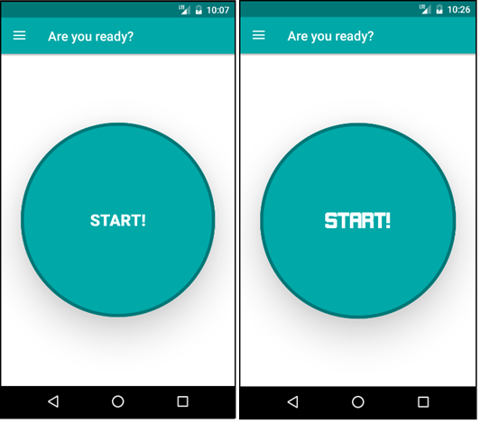
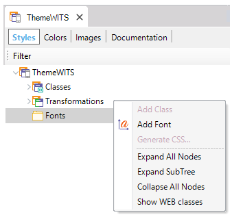
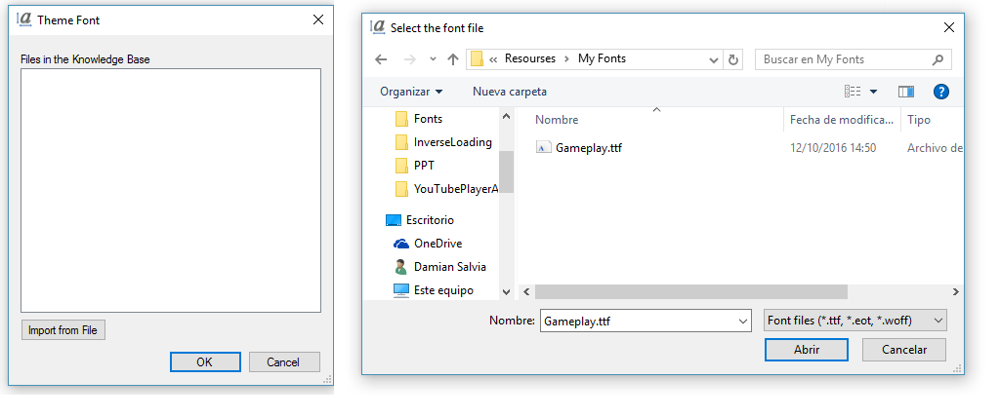
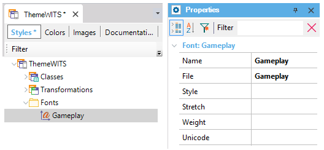
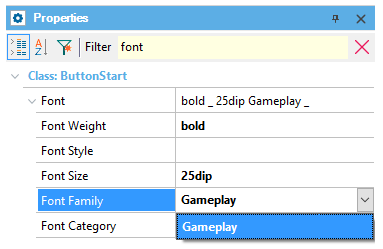

Many times in different applications you need to use custom Fonts. This article explains how to use them through the Theme object. Font nodeOn the Theme object, there is a Fonts node where you can incorporate custom text fonts associated with the application, that behaves the same way as Web Fonts. This works analogously as Transformations, giving you the ability to:
Usage exampleImagine a simple panel with a "start!" button. The objective is to customize its appearance by changing its font.  In order to achieve this, the following steps must be followed: 1) Get the font that you want and make sure that the extension is compatible with the platform. 2) Open the Theme object and look for the Font node. Right-click on it and chose the Add Font option.  3) This action will display a dialog to import the font's source file (in this case, a TTF file called Gameplay).  4) Once the font is imported, select it from the dialog and click the "ok" button. After this action, the new font will be displayed under the Font node.  5) Look for the theme class whose font you want to change (in this case, a button class) and look for the Font Family property. In this property select the newly added font from the combo-box.  6) That's all. Just run your application and the text in the control will be displayed with the new font. Notes
Troubleshooting in iOSMismatch in font nameIn a few rare cases we've found that the font is registered in iOS with a different name than the one indicated inside the TTF font file. The symptoms when this happens are clear: the controls on screen will not have the appropriate font, as specified in the corresponding Theme Class. In such a case, the name of the font in the Theme's Fonts node must match the name registered in iOS, and not the name inside the TTF file. To find the correct name, you should follow these steps:
UI Optimized FontsWhenever a custom font is used, the iOS Flexible Client will try to use a UI optimized version of that font, if the selected font variation is not optimized for UI. This has a profund impact in performance if the font variation is widely used. However, you may not want this UI optimization, preferring the non-optimized font anyway. How do you know you are in such a case? If you don't see the correct font variation in the UI (you may have used the GothamRounded-Book font, for instance, but you see the text in the app with GothamRounded-Bold), run the application directly from Xcode in the Simulator, and check for a message as follows in the Xcode console: UI optimized font changed from '%@' to '%@'. To avoid this behavior, add a GXDisableUIOptimizedFontEnforcement key with value YES to the Info.plist. Note that the %@ placeholders in the message correspond to the font names and will be instanciated when you run your application. To disable this UI optimization (be aware that it may have a performance impact), you can add the GXDisableUIOptimizedFontEnforcement key to the application's Info.plist, of type Boolean and with value YES. This key is available as from GeneXus 17 upgrade 1. ScopeObjects: Theme object AvailabilityThis functionality is available as from GeneXus 15 Upgrade 1.
|
| Backlinks | |
| Attribute theme-class | Button theme-class for Smart Devices |
| HowTo:Using web fonts in Genexus | |
| Category:Theme object |